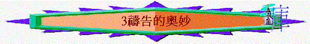

引言：你有沒有在祈禱中經歷奇妙事情？
一.禱告產生的奇妙能力
1.改變自然的能力
「當耶和華將亞摩利人交付以色列人的日子，約書亞就禱告耶和華，在以色列人眼前說：日頭啊，你要停在基遍；月亮啊，你要止在亞雅崙谷。於是日頭停留，月亮止住，直等國民向敵人報仇。這事豈不是寫在雅煞珥書上嗎？日頭在天當中停住，不急速下落，約有一日之久。在這日以前，這日以後，耶和華聽人的禱告，沒有像這日的，是因耶和華為以色列爭戰。」書10:12-14
「基列寄居的提斯比人以利亞對亞哈說：「我指著所事奉永生耶和華以色列的神起誓，這幾年我若不禱告，必不降露，不下雨。」王上17:1
2.止息災禍的能力
「摩西對他說：「我一出城，就要向耶和華舉手禱告；雷必止住，也不再有冰雹，叫你知道全地都是屬耶和華的。」出9:29
3.醫治復原的能力
「王對神人說：「請你為我禱告，求耶和華你神的恩典使我的手復原。」於是神人祈禱耶和華，王的手就復了原，仍如尋常一樣。」王上13:6
4.得著平安的能力
「應當一無掛慮，只要凡事藉著禱告、祈求，和感謝，將你們所要的告訴神。神所賜、出人意外的平安必在基督耶穌裡保守你們的心懷意念。」腓4:6-7
5.放膽傳道的能力
「禱告完了，聚會的地方震動，他們就都被聖靈充滿，放膽講論神的道。」徒4:31
「弟兄們，我還有話說：請你們為我們禱告，好叫主的道理快快行開，得著榮耀，正如在你們中間一樣。」帖後3:1
「也為我祈求，使我得著口才，能以放膽開口講明福音的奧秘，」弗6:19
6.得勝魔鬼的能力
「耶穌說：「非用禱告（有古卷加：禁食二字），這一類的鬼總不能出來（或作：不能趕出他去來）。」」可9:29
7.管教肢體的能力
「我實在告訴你們，凡你們在地上所捆綁的，在天上也要捆綁；凡你們在地上所釋放的，在天上也要釋放。我又告訴你們，若是你們中間有兩個人在地上同心合意的求什麼事，我在天上的父必為他們成全。」太18:18-19
8.感染他人的能力
「以斯拉禱告，認罪，哭泣，俯伏在神殿前的時候，有以色列中的男女孩童聚集到以斯拉那裡，成了大會，眾民無不痛哭。」拉10:1
二.關乎禱告難解的經文
1.神自己可成就卻用人的禱告
「現在你把這人的妻子歸還他；因為他是先知，他要為你禱告，使你存活。你若不歸還他，你當知道，你和你所有的人都必要死。」創20:7
「另有一位天使，拿著金香爐來，站在祭壇旁邊。有許多香賜給他，要和眾聖徒的祈禱一同獻在寶座前的金壇上。那香的煙和眾聖徒的祈禱從天使的手中一同升到神面前。天使拿著香爐，盛滿了壇上的火，倒在地上；隨有雷轟、大聲、閃電、地震。」啟8:3-5
2.人有神的應許仍向神作呼求
「萬軍之耶和華以色列的神啊，因你啟示你的僕人說：『我必為你建立家室』，所以僕人大膽向你如此祈禱。」撒下7:27
3.神命定了的事人意可以扭轉
「大衛看見滅民的天使，就禱告耶和華說：「我犯了罪，行了惡；但這群羊做了什麼呢？願你的手攻擊我和我的父家。」」撒下24:17
「大衛在那裡為耶和華築了一座壇，獻燔祭和平安祭。如此，耶和華垂聽國民所求的，瘟疫在以色列人中就止住了。」撒下24:25
「那時，希西家病得要死。亞摩斯的兒子先知以賽亞去見他，對他說：耶和華如此說：『你當留遺命與你的家，因為你必死，不能活了。』希西家就轉臉朝牆，禱告耶和華說：」王下20:1-2
「「你回去告訴我民的君希西家說：耶和華你祖大衛的神如此說：『我聽見了你的禱告，看見了你的眼淚，我必醫治你；到第三日，你必上到耶和華的殿。」王下20:5
～神是有祂的心意，但在某些情況下，祂可因人的祈求，而改變原有的心意，容許一些事情發生，但神終極的旨意仍是不會變的
3.神竟叫人不要為百姓們祈禱
「所以，你不要為這百姓祈禱；不要為他們呼求禱告，也不要向我為他們祈求，因我不聽允你。」耶7:16
「「所以你不要為這百姓祈禱，不要為他們呼求禱告；因為他們遭難向我哀求的時候，我必不應允。」耶11:14
「耶和華又對我說：「不要為這百姓祈禱求好處。」耶14:11
4.聖靈用說不出歎息替我們求
「況且我們的軟弱有聖靈幫助，我們本不曉得當怎樣禱告，只是聖靈親自用說不出來的歎息替我們禱告。鑒察人心的，曉得聖靈的意思，因為聖靈照著神的旨意替聖徒祈求。」羅8:26-27
～人有時軟弱到不曉得當怎樣禱告，可能只能表達說不出來的歎息，但聖靈是明白我們內心的，將我們的歎息轉化為合神心意的禱告，帶到神面前
5.耶穌升至天上仍為我們代求
「誰能定他們的罪呢？有基督耶穌已經死了，而且從死裡復活，現今在神的右邊，也替我們祈求（有基督云云或作是已經死了，而且從死裡復活，現今在神的右邊，也替我們祈求的基督耶穌嗎）」羅8:34
「凡靠著他進到神面前的人，他都能拯救到底；因為他是長遠活著，替他們祈求。」來7:25
～基督雖升為至高，但祂在父神的右邊，仍然以父神為父神，祂也會向父神祈求